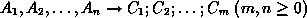
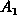
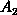
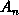
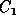
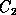
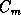
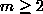

Machine: PIM/UNIX machine Environment: PIMOS/UNIX, KLIC Language: KL1, Prolog Source Code: 160 KB Documents: User's Manual (English / Japanese)

where an antecedent is a conjunction of

,
, ...,
; a consequent is a disjunction of
,
, ...,
. When n = 0 , it gives the initial model ( a set of facts ). When m = 0 , it represents a condition of contradiction. This MGTP clause is translated to KL1 clause by the pre-processor written in Prolog.In MGTP, proving starts with the initial model and proceeds from the antecedent to the consequence in a forward reasoning manner. When

, a case-splitting is examined.The range-restrictedness condition is imposed on the problem clauses of MGTP/G. A clause is said to be range-restricted if every variable in the clause has at least one occurrence in its antecedent. When range-restricedness is satisfied, all atoms appearing in the proof are ground. Efficient implementation is made possible by the groundness.
MGTP/G has is capable of dealing with most AI applications in spite of its range-restrictedness. It is easy to implement useful frame work in MGTP/G, such as negation as failure, hypothesis reasoning and modal reasoning by representing features in clauses.